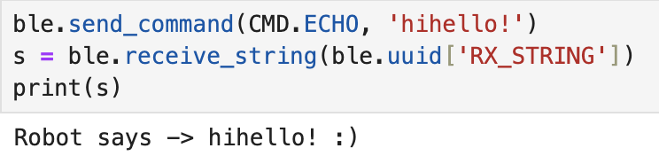
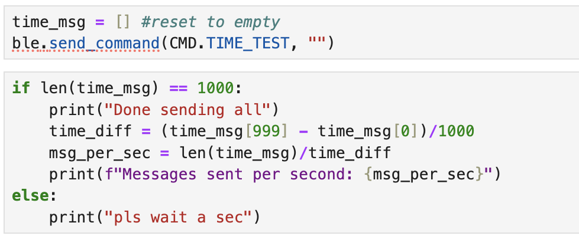
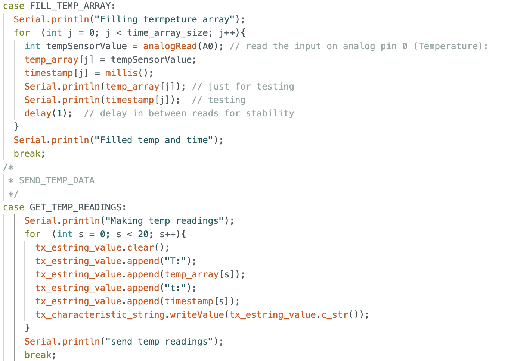

Hi! This is my home page for my ECE 4160 labs. I am a Senior MechE student at Cornell University and I am interested
in robotics for extreme environments such as space! I am currently building a
bipedal robot for my project team Cornell Cup Robotics!
Lab 1
Introduction
Lab Objectives
The objective of this lab is to set up and become familiar with the Arduino IDE and the Artemis board. We set up the board and downloaded
the necessary packages to facilitate sending messages from the board to our computer over Bluetooth. Using the Arduino examples, we the
practiced reading/writing serial messages over USB.
Components
1 x SparkFun RedBoard Artemis Nano
1 x USB C-to-C or A-to-C cable
Janurary 24th
Prelab
Artemis Board Set up
I started with downloading the Arduino IDE and setting up the SparkFun RedBoard Artemis Nano with these
instructions
I plugged the board into my computer and I ensured the Arduino IDE was able to locate it and selected the appropriate port (see the below screenshot)
Tasks
1. I tried various example codes provided by the Apollo dev kit starting with "Blink" In File->Examples->Basics, here is a video of what happened once I uploaded the code to the board.
2. Next, I tried "Example4_Serial" In File->Examples->Artemis Examples, here is what printed out in the serial monitor once I uploaded the code onto the board.
3. The next task was to test the temperature sensor with "Example2_analogRead" File->Examples->Artemis Examples. In this video, you can see the temperature values increasing when I hold my finger over the sensor.
4. Lastly, I tested the microphone with the sample code "Example1_MicrophoneOutput" in File->Examples->PDM. In this video, I play a constant note and in the serial monitor, you can see the frequency change and hold constant.
Setting up Bluetooth connection
Computer set up
I first started by verifying what version of Python and Pip I had using the macOS terminal.
I confirmed I had the latest releases (Python >= 3.9 and pip >= 21.0)
Then I installed the virtual environment using the following commands:
python3 -m pip install --user virtualenv cd /Users/patty/Documents/fastrobots python3 -m venv FastRobots_ble
To start the virtual environment use this command:
source FastRobots_ble/bin/activate
To confirm you are in the virtual environment you should see the prefix (FastRobots_ble) before each command:
Artemis Board Setup
Install ArduinoBLE from the library manager (Tools -> Manage Libraries…) in the Arduino IDE.
Open and run ble_arduino.ino into the Artemis board from the directory ble_arduino in the codebase.
The Artemis board should now print its MAC address. My MAC address: C0:83:0C:69:AC:3C
I downloaded the provided codebase into my project directory. I copied the "ble_python" directory into my project directory.
And finally, I started the Jupyter server by typing in the command:
Jupyter lab
LAB 1.2
Introduction
Lab Objectives
The objective of this lab is to continue from lab 1 and test the Bluetooth connection between
the board and our laptops. We practiced sending timestamped messages from the Artemis board, and
how to use notification handlers in Jupyter Notebook to receive and handle these messages.
Components
1 x SparkFun RedBoard Artemis Nano
1 x USB C-to-C or A-to-C cable
Janurary 29th
Set up
How to log back into virtual machine
Open the terminal and type these 3 commands one at a time. This navigates to the correct directory,
opens the virtual machine, and starts the Jupyter Notebook tab on my browser.
cd /Users/patty/Documents/fastrobots source FastRobots_ble/bin/activate Jupyter lab
Configurations
I made a copy of the ble_arduino.ino file, and the demo.ipynb file and did the rest of the lab tasks there.
I added added MAC address here in the connection.yaml file from the project directory.
What is a UUID? It stands for Universally Unique Identifiers and they help differentiate the
different kinds of data that we are sending.
Run these two lines in a code block in Jupyter Notebook to generate a new UUID.
from uuid import uuid4 uuid4()
With a newly generated UUID, copy and paste it into these two locations. In the connection.yaml file and in the
ble_arduino.ino file. Make sure the UUIDs used in the Arduino sketch always match those used by Python in the configuration
file (connection.yaml).
Practice!
Tasks to practice receiving messages from the Artemis board
I am connected to Bluetooth!
1. Send an ECHO command with a string value from the computer to the Artemis board,
and receive an augmented string on the computer.

In my Python script, I am using the send_command() function which
sends a string data to the GATT characteristic (TX_CMD_STRING). Then there is a case called "ECHO" in my Arduino script that received the message
and manipulates the string. I have it print to the Arduino serial (for testing purposes) and then I have it send the edited string back with the writeValue() function.
since I have a receive_string() function, it reads the most recent string message and prints it out to the Python script.
2. Add a command GET_TIME_MILLIS which makes the robot reply write a string such as “T:123456” to the string characteristic.
This command is similar to the case before, except I sent the Arduino an empty message since it just
wanted to trigger code in the GET_TIME_MILLIS case in Arduino. Once that case was called, it used the millis() function to generate a time in milliseconds. It is important to clear the string,
then append the parts I need every time becuase I was sending multiple different messages between the two. Again, I have a receive_string() function in my python that reads the string and
prints it out.
3. Set up a notification handler in Python to receive the string value from the Artemis board.
In the callback function, extract the time from the string.
In my notification handler I look for the "t" character in the string. Then I have an if statement basically so it
only continues if it can find that t. Then it manipulates the string to only have the time as a float, then I store it in an array called time_msg. The start_notify funciton activated the notification hanlder.
so it is constantly running and will automatically read the messages sent from the Arduino of the proper type.
4. Write a loop that gets the current time in milliseconds and sends it to your laptop to be received and processed
by the notification handler. Collect these values for a few seconds and use the time stamps to determine how fast messages
can be sent. What is the effective data transfer rate of this method?

In python I sent the command TIME_TEST, wich corresponds to the case in the ardino code. this is a loop that runs a set number of times
(in this case 1000) and it reads the current time in milliseconds and sends it as a string. now that my notification handler is running, it knows how to edit this string, every time this
loop runs. I have a second block of code that is to find the data transfer rate. Once the loop is finished running, it uses the first and last time values to find the total rate of message transfer.
in this case, the time was 133.6005 messages sent per second.
5. Now create an array that can store time stamps. This array should be defined globally so that other functions can access it if need be.
In the loop, rather than send each time stamp, place each time stamp into the array.
Then add a command SEND_TIME_DATA which loops the array and sends each data point as a string to your laptop to be processed. (You can store these values in a list in python to determine if all
the data was sent over.)
For this problem I made two separate cases to send commands to in the Arduino script. The first one FILL_TIME_ARRAY is to only
fill up an array with the times. The second case SEND_TIME_DATA, loops over the array and sends it all at once. I made another code block to test how many messages were sent per second and
with this method, 403.88 messages were sent per second.
6. Add a second array that is the same size as the time stamp array. Use this array to store temperature readings. Each element in both
arrays should correspond, e.e., the first time stamp was recorded at the same time as the first temperature reading. Then add a command GET_TEMP_READINGS
that loops through both arrays concurrently and sends each temperature reading with a time stamp. The notification handler should parse these strings and
and populate the data into two lists.

This one took a bit more problem solving so I made a separate notification handler for these types of messages. In the Python, I sent two separate commands to fill the arrays with data and
then to send it all at once because we proved earlier this was the faster way of sending data. FILL_TEMP_ARRAY filled both an array with temperatures and timestamps that coorespond to each. Then GET_TEMP_READINGS creates a string with an upper case T: for temperature and
a lower case t: for time from the timestamp array. Once all the data is appended to a string it is sent. this loops over the whole array of collected temperatures. In the notification handler, I look for the time and the temperature and extract them from the string.
Last, I printed them all out in nice columns.
7. Discuss the differences between these two methods, the advantages and disadvantages of both and the potential scenarios
that you might choose one method over the other. How “quickly” can the second method record data? The Artemis board has 384 kB of RAM. Approximately how much data can you store to send without running out of memory?
I calculated the time to send messages for both scenarios previosly in my script. The first method sent approximately 133 messages per second and
the second method was able to send approximately 404 messages per second. Then using our knowledge of the RAM capacity of the Artemis, I calculated that with method 1 I can send messages for over 5 minutes before I run out of storage
and with the second method I can send messages for 1.8 minutes before I run out of storage. The advantages of the first method is that we can send real-time transmission of data, as time stamps are sent immediately after being generated.
Disadvantages could be the slower rate of data transfer and higher potential for data loss or delays if the communication channel experiences congestion or interference. The second method, other than the speed, has the advantage of providing more flexibility in handling and processing data
on both the sender and receiver sides. A disadvantage could be having to wait till the array is filled to send the data, and having to make sure the array is not over-filled.
In the callback function, extract the time from the string.
Lab 2
Introduction
Lab Objectives
The objective of this lab is to add the IMU to the robot and to learn how to use readings from the accelerometer
and gyroscope. I learned how to filter data to get the most accurate reading. We also got to test out our stunt cars!
Components
1 x SparkFun RedBoard Artemis Nano
1 x USB C-to-C or A-to-C cable
1 x 9DOF IMU sensor
1 x Force1 RC car
1 x Li-Ion 3.7V 850mAh battery
Februrary 7th
Set up the IMU
1. In the Arduino library manager, install the SparkFun 9DOF IMU Breakout - ICM 20948 - Arduino Library
2. Connect the IMU to the artemis
3. Run the file “..\Arduino\libraries\SparkFun_ICM-20948\SparkFun_ICM-20948_ArduinoLibrary-master\examples\Arduino\Example1_Basics”
4. Look for the variable AD0_VAL, set it to zero.
(This variable represents the last bit of the i2c address of the IMU. It needs to be set to 0 or 1 depending on if the ADR jumper is closed)
I added a blinking light during startup as a visual indication that the board is running. Then I tested the accelerometer data with the serial plotter,
you can see as I flip the IMU in different ways how the lines fluctuate. The data is pretty noisy.
Accelerometer
Convert Accelerometer Data into Pitch and Roll
These are the equations I used to convert the raw accelerometer data into Euler angles (pitch and roll).
Here is a video of me holding the IMU steady with a pitch of -90 degrees and a roll of zero. I am printing the values in degrees to the serial monitor
of the Arduino. As you can see the accelerometer is pretty accurate so there is no need for a two-point calibration.
Analyzing The Frequency Spectrum
Because there is noise, it is good to analyze the data in the frequency spectrum, to see what frequencies of noise are prevalent
.I recorded accelerometer data on the Artemis and sent it over to my computer. I downloaded Scipy.fftpack package to graph the FFT.
Below is how I calculated the Fourier transform.
Below are my Fourier spectrum graphs for both pitch and roll when the IMU is flat on the table. The left is the raw data measurement and the right is the FFT.
I then tried adding a vibration by hitting the table. You can see in the amplitude graph where I hit the table, but the FFT graph still looks similar with larger magnitudes.
None of the frequencies stood out to me in the vibration test but the parts of the spectrum with the highest spikes occur at around 10 Hz and 35 Hz, I could not determine an
obvious cutoff frequency but I kept playing around with it and decided to start with a cutoff frequency of 10 Hz.
Applying Low Pass Filter
For the low-pass filter, to calculate my alpha value I used these formulas starting with the cutoff frequency (fc), and period (T) which is 1/sampling rate.
After yielding an alpha value of ~ 0.12, I used this formula for both pitch and roll to filter my raw accelerometer data.
Here is what my LPF looks like in the Arduino code.
This is a graph of the raw data and filtered data taken at the same time. This one is with the 10 Hz cutoff frequency. As you can see it is better but there is still
a significant amount of noise.
I tried filtering again but with a lower cutoff frequency of 4 Hz and I hit the table at the begining. This was significantly better at minimizing the noise.
I think my low pass filter overall worked great. The values it outputs for the angles are consistent. There is still a good amount of noise but
I cannot keep lowering the frequency cutoff value or else I will miss out on important signals from the sensors.
Gyroscope
Compute Pitch, Roll, and Yaw Angles
To convert the raw gyroscope data to Roll, Pitch, and Yaw angles, I multiplied the angle by a time increment dt and added it to the current angle.
Here is the code in my arduino.
This is a graph of gyroscope roll, pitch, and yaw vs time. I rotated the IMU back and forth as you can see from the occilations. The issue with the gyroscope is that it constantly "drifts".
As you can see the angels apear to be driting and increasing slowly even if i was retunring teh gyrosope to the same place each time.
The main differnce between the gyroscope data and the accelerometer data is that the gyrosope drifts from the start. Becuase the gyrposcope only measures relative angles, I need to always
initiallize the first position as zero. And lastly, the gyroscope has much less noise than the accleerometer data which is a big benifit. I tried playing around with the sampling rate
by adding in delays, I found that the longer the delay (lower sampling rate), the more the gyroscope values drift. Below is the data with keeping it still (my leg was tapping under the desk).
Complementary Filter
Combining Gyroscope data and Accelerometer Data
A complimentray filter can be uaed to combine the two types of data, gyroscope and accelerometer. It uses the most useufl parts from both and creates the most
accurate filter that is not susceptible to drift or quick vibrations. I tried various alpha values in order to determine wich filter to putthe most weight on.
The following is the equation for the complimentary filter.
To implement it on the artemis, I took the accelerometer low pass filter and gyroscope readings all together and passed it though my complimentary filter.
I decided to go with an alpha of 0.1. After many tries it seemed to be the best combination of the two. As you can see in the image below. The complimentary filter did a good job
of combineing the two filters. In these images I am just rolling it from -90 to zero to 90 and back to zero. In the roll graph, all the filters are fairly accurate so you dont see the
benefits of the complimentary filter as much, but in the pitch graph (I was trying to keep it constant) you can see how the complimentary filter kept the noise low and did not drift.
In this measurement of data I added vibrations and the filter did a good job. You can see especially see in the pitch graph where the complimentary filter
is not susceptible to the gyroscope drifting and is much less noisy then just the LPF filter.
Sample Data
Improving the way I Sample Data
After making sure all my filters were running smoothly, I implemented a few strategies to speed up the excecution of the main loop and the sampling rate.
I deleted all my comments, and removed all my delays. I also moved the part where I checked if the data is ready in the main loop (see below). I was able to record a sampling rate
of about 315 messages per secodn this way this is almost double what I had before.
Stunt Car!
Using Built-in Controller
Here I am performing several stunds using the car's original controller.
Lab 3
Introduction
Lab Objectives
The objectice of this lab is to start soldering components, we soldered the lithium-ion battery to the appropriate connector so we can use the
artemis board without needing to be pluggin in to our laptops. We also soldered the time of flight sensors to QWIIC Breakout board conenctor.
With the ToF sesors, I and learned how to read and send data with two identicle sensors. I also implemented ways to read sensor data as quick as possible.
Components
1 x SparkFun RedBoard Artemis Nano
1 x USB cable
2 x 4m ToF sensor
1 x QWIIC Breakout board
2 x Qwiic connector
1 x Measuring tape
Februrary 14th
Power up!
Power the Artemis with a battery.
I cut the current connector off the lithium ion battery cutting the wires one at a time! (so you don't complete the circuit with the scisors and short the battery).
Then I solderd the battery wires to the JST jumper wires and isulated the exposed wire with heat shrink. Below is the battery after I cut it and after I soldered the new connector on.
Next I powered the artemis with the battery alone (no usb into laptop). To make sure it worked still, I resetted the artemis and as you can see in the video
below, the blue light blinked 3 times. I had this blink sequence occur on startup in the code that I last uploaded to the artemis.
Next, I installed the SparkFun VL53L1X 4m laser distance sensor library and I connected the QWIIC break-out board to the Artemis.
Set up ToF sensors
Connect the first ToF sensor to the QWIIC breakout board.
I used the data sheet to create a plan on how I was going to solder the QWIIC cable to the first time of flight sensor. Once I decieded what goes where, I solderd it
directly on the boaard and used heat shrink on the ends. This was my first time soldering so I was nervous at first, I found the helping hands to be extemly helpful to not mess up.
Scan the I2C channel and test the first sensor.
I navigated to the example arduino code: File->Examples->Apollo3->Wire and open Example1_wire_I2C. When i ran that it printed out the adress 0x29, this is as excpeted as everyone else
in the class ahd thesaem adress sicne we all had identical components.
Next I ran the example: \Arduino\libraries\SparkFun_VL53L1X_4m_Laser_Distance_Sensor\examples\Example1_ReadDistance. As you can see in teh video below the sensor was woking!
As I got close to my screen, the numbers apporched zero.
Testing different sensor modes
Pros & Cons of each mode
I tested two modes on the sensor short and long. In the setup of the arduino script this is how I set the mode:
The short mode is best up to distances of 1.3m away but the default mode is long, which is most accurate at distances 1.3-4m away. Choosing wich mode to use is
dependant on the use of the robot. If you are naviagitng through tight obstacles that you might be running into a lot, the short mode is best so that you can react quickly. If you are trying to path plan
in a larger winding hallway the long range might be better so you can more acurately predict the turns it will take.
Below is an image of the test setup I did so I could test both modes at various distances. I set up a measuring tape and marked the specifc distances I wanted to test. I held the TOF sensor on a flat surface and
taped it down so it would always be in the exact same place. I moved a white cardboard box to the position and ran the sensor for 100 measurements, and repeated for both modes.
In the python script, I received the data and saved the mean of each distance measurement in an array. I tested both modes at 5cm, 10cm, 1m, and 2m. I then graphed the results
with a red dotted line showing where the actual measuremtns should be. As expected, the short mode sensor was closer to the actual values in the shorter range and the long mode was closer in the longer range.
I was suprised buy the undershoot of over 100 millimenters in both modes at the longest range. I thought it would be more accuratre. I think next time I should try other colours to reflect off of.
Setting up Both ToF Sensors
First method to record data with both sensors simultaniously.
Setting up two sensors required use of the xshut pin on one of the Sensors. I started out by soldering a wire to a digital pin on the artemis board and the xshut pin on one of the ToF sensors.
Then in my aduino code, in the setup loop I do the following operations:
1. I shutodwn sensor 2 by setting the xshut pin to low.
2. I begin sensor 1 and set a new I2C address for sensor 1.
3. I bring sensor 2 out of shutdown mode (set to to high).
4. I begin sensor 2 and set the I2C address for sensor 2 as default (0x29).
Now they are both connected with differnt I2C adresses!
Now you can see in this video, as I alternate bringing the sensors close to the table they read different values.
To send and recieve data to my computer, I set up a case that activates an if stateemnt in my void loop. So from my python script I call that case then the void loop will continuosly check if data is ready,
take data, store it in an array, and send it all at once. This is what that method looks like.
This method yeilded this graph when I alternated bringing the sensors close to the table.
Though this graph looks nice, the rate that the data is taken is very slow, this mehtod in the loop where I wait untill the data is ready to take the measurment is taking too long. The loop only runs at less than 8 messages per seond.
Quicker method to record data.
It is essential that the code executes quickly, therefore I cannot let it hang while it waits for the sensor to finish a measurement. This new method allowsd the loop to run, continuously with the only limiting factor
being how quickly each line excecutes and it reads and adds new ToF sensor data from both sensors only when available. Below is how I implemented, see the if statement.
As you can see the loop runs much faster now!
Now I am able to send timestamped messages and graph both sensors data more accuratly. There are spikes becuase the sensor is much slower than the loop, so all the points in betweeen the senssor being ready are zero.
I printed the data and measured the time between each spike as 0.101 seconds.
Finally, this is what the completely soldered component looks like!
Lab 4
Introduction
Lab Objectives
The objective of this lab is to set up the two dual motor controllers and spin the wheels! Once we attach those, we can solder all the components together and to the artemis so everything
can now sit on the car. I learned how to use a power supply and oscilloscope to verify functionality and I started calibrating the motors to move together with a linear relationship.
Components
1 x SparkFun RedBoard Artemis Nano
1 x USB cable
2 x 4m ToF sensor
1 x QWIIC Breakout board
2 x Qwiic connector
1 x JST2 connector+cable
1 x Force1 RC car
1 x Li-Ion 3.7V 850mAh battery
2 x Dual motor drivers
Februrary 21st
Prelab
Wiring Diagram
Here is the diagram of how I decided to wire the two motor controlers in parallel and to the artemis. Each motor controller needs two PWM pins becuase they each switch from
forward and backwards using PWM signal. Each board has 2 H bridges but we are only using one so I bridged both A1, B1 together and A2, B2 together. I decided to solder 3 wires together
for the motor controllers and battery to simplify the wiring, it's all grounded and power is deliverd to both boards. We are powering both motor controllers seperatly from the artemis
battery becuase running the motors drains the battery much quicker than the artemis.
And here is how one of the soldered boards look!
Dual Motor Driver Setup
Testing the first motor controller.
Next I soldered the first motor contorller to the artemis, but connected the Vin and ground wires to the power supply, and the signal out wires to the oscilloscope. Here is
a picture of my setup. And this is the code that I sent the artemis to send a pulse signal to the motor contoller with a delay. I set the power supply to 3.7V as the data sheet suggested.
On the oscilloscope, I could change the size of the square wave based on how long the delay was and the size of the signal. This first picture of the oscilloscope display is
from the code above, the second picture was me sending two different values.
Strip the car!
I oppened the car up and cut out the current controller board.
The wires that were previously attached to the motor were very loose and I accidently pulled them off, so I just soldered my signal out wires from my controller
directly to the motor.
Turn the wheels!
Next, with the external power supply plugged into the motors, I sent it a signal forwards and backwards by setting a value (between 0 and 255) to one pin and zero to the other, then switching directions by
alternating which pin I was sending what. As you can see in this video I was very successful going forwards and back for just the first controller!
Then I did the same thing using a 850mAh battery insted of the power supply.
Final test was to repeat all the steps for the other motor controller. I was very happy to see it was all wired correctly and all four wheels ran as expected!
Here is what my final car looked like all soldered and taped up! I chose to put one ToF sensor on what im calling the "front" and one on the side through the wheels.
These locations are not permament but they intuitivly seemed like the most useful locations for obstacle avoidance. I put the IMU on the front on the black box becusue I wanted it to
lay flat and centered through the middle of the car. I put the artemis in the back with the usbc port and the battery port facing outwards becuase I plug and unplug those often.
The reset button is also easy to access. The rest of the wires are tucked into the empty hole, I tried to neatly fold them in but did not want to attach anyhting just incase there was an issue
with my soldering. I closed it over with a piece of duck tape that I can easily remove.
Testing with wheels on ground
Pros & Cons of each mode
With the car on the ground, I iterated through different combinations of values until both sides moved at the same speed and the car went straight. The ratio I found for left:right was 185:110.
Here is what the basic code looked like while I was essentially guessing and checking.
Next, while maintaining this ratio of 185:110, I found the lowest value I could send to move the car. In the video below you can see how it barely moves.
Now using this information of the ratio between wheels and the range of values I can use, I created a foward and backward drive function with a linear mapping. It maps an input value of 1-100
to the coresponding motor values that maintian the ratio. I also put in a duration paramter so you specify the speed (1-100) and how long you want it to drive for in millisecodns.
Here is what my drive forward function looks like!
Here is a video of it drivng forward where I set the speed to 50 and have it drive for 2.5 seconds! It goes pretty straight but I noticed at the end it turns a bit becuause one of the motors takes
longer to slow down. This might be due to the friction inside each motor not being exacly the same. And I could fix this by finding the diffence in time it takes to slow each down and ofset their stop, but for now
, I think this driivng straight is sufficient and we will play around more with correcting its trajecetory with PID control.
Driving with turns
I made a few functions to simplify sending it commands. I made a forward and backward function, and made a turn left 90 and turn rihgt 180, to see how hard it was to tune these values.
It turned out to be much more tedius than I expected and after slighly adjusting the code, uploading and unplugging the robot several times, this process became very repetative and slow.
I did turns in place by spining one side forward and one side backward. Turns were hard to make accurate becuase there was so many variables I could adjust, like difference in speed between the wheels,
turning speed, and how long to let it spin for. Overall I found pretty accurate values to send it and the following code is the series of commands I gave it.
Finally, here is the video of it performing these commands. Looks great! Besides the 180 turn that was undershot a bit, I'm happy with the accuracy for just manually adjusting.